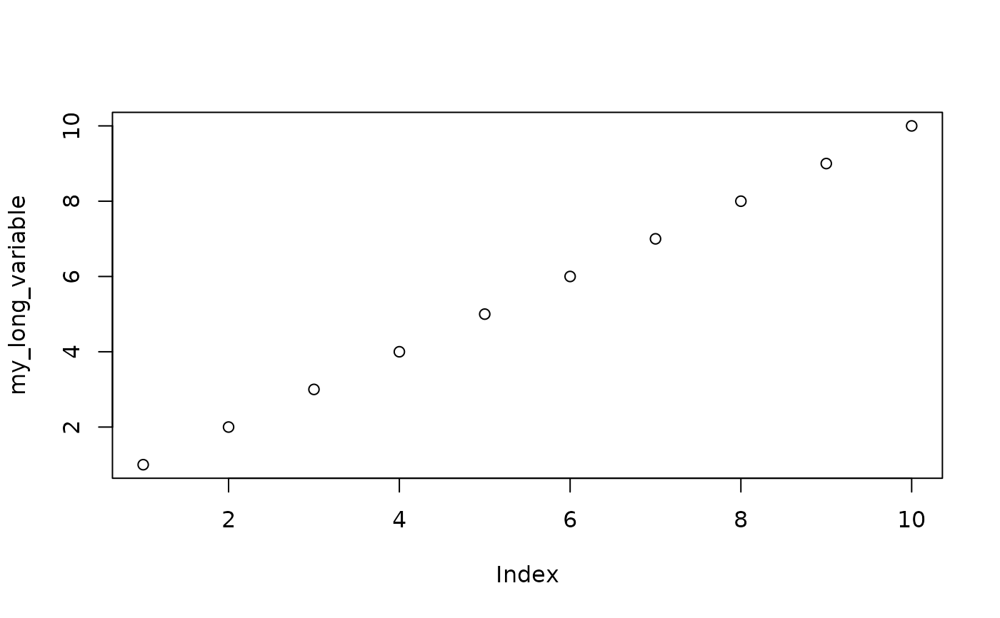

Partial function application allows you to modify a function by pre-filling some of the arguments. It is particularly useful in conjunction with functionals and other function operators.
partial(.f, ..., .env = NULL, .lazy = NULL, .first = NULL)
Arguments
| .f | a function. For the output source to read well, this should be a named function. |
|---|---|
| ... | named arguments to Pass an empty These dots support quasiquotation. If you unquote a value, it is evaluated only once at function creation time. Otherwise, it is evaluated each time the function is called. |
| .env | Soft-deprecated as of purrr 0.3.0. The environments are now captured via quosures. |
| .lazy | Soft-deprecated as of purrr 0.3.0. Please unquote the arguments that should be evaluated once at function creation time. |
| .first | Soft-deprecated as of purrr 0.3.0. Please pass an
empty argument |
Details
partial() creates a function that takes ... arguments. Unlike
compose() and other function operators like negate(), it
doesn't reuse the function signature of .f. This is because
partial() explicitly supports NSE functions that use
substitute() on their arguments. The only way to support those is
to forward arguments through dots.
Other unsupported patterns:
It is not possible to call
partial()repeatedly on the same argument to pre-fill it with a different expression.It is not possible to refer to other arguments in pre-filled argument.
Examples
# Partial is designed to replace the use of anonymous functions for # filling in function arguments. Instead of: compact1 <- function(x) discard(x, is.null) # we can write: compact2 <- partial(discard, .p = is.null) # partial() works fine with functions that do non-standard # evaluation my_long_variable <- 1:10 plot2 <- partial(plot, my_long_variable) plot2()# Note that you currently can't partialise arguments multiple times: my_mean <- partial(mean, na.rm = TRUE) my_mean <- partial(my_mean, na.rm = FALSE) try(my_mean(1:10))#> Error in mean.default(na.rm = TRUE, ...) : #> formal argument "na.rm" matched by multiple actual arguments# The evaluation of arguments normally occurs "lazily". Concretely, # this means that arguments are repeatedly evaluated across invocations: f <- partial(runif, n = rpois(1, 5)) f#> <partialised> #> function (...) #> runif(n = rpois(1, 5), ...) #> <environment: 0x7fac8001ec20>f()#> [1] 0.5647063 0.2041884 0.8266304 0.9647663 0.3472210f()#> [1] 0.2869449 0.2796939 0.9334609 0.3154934 0.3165879 0.3571670# You can unquote an argument to fix it to a particular value. # Unquoted arguments are evaluated only once when the function is created: f <- partial(runif, n = !!rpois(1, 5)) f#> <partialised> #> function (...) #> runif(n = 3L, ...) #> <environment: 0x7fac8001ec20>f()#> [1] 0.6373880 0.1543250 0.5652254f()#> [1] 0.1457837 0.2854921 0.2606492# By default, partialised arguments are passed before new ones: my_list <- partial(list, 1, 2) my_list("foo")#> [[1]] #> [1] 1 #> #> [[2]] #> [1] 2 #> #> [[3]] #> [1] "foo" #># Control the position of these arguments by passing an empty # `... = ` argument: my_list <- partial(list, 1, ... = , 2) my_list("foo")#> [[1]] #> [1] 1 #> #> [[2]] #> [1] "foo" #> #> [[3]] #> [1] 2 #>